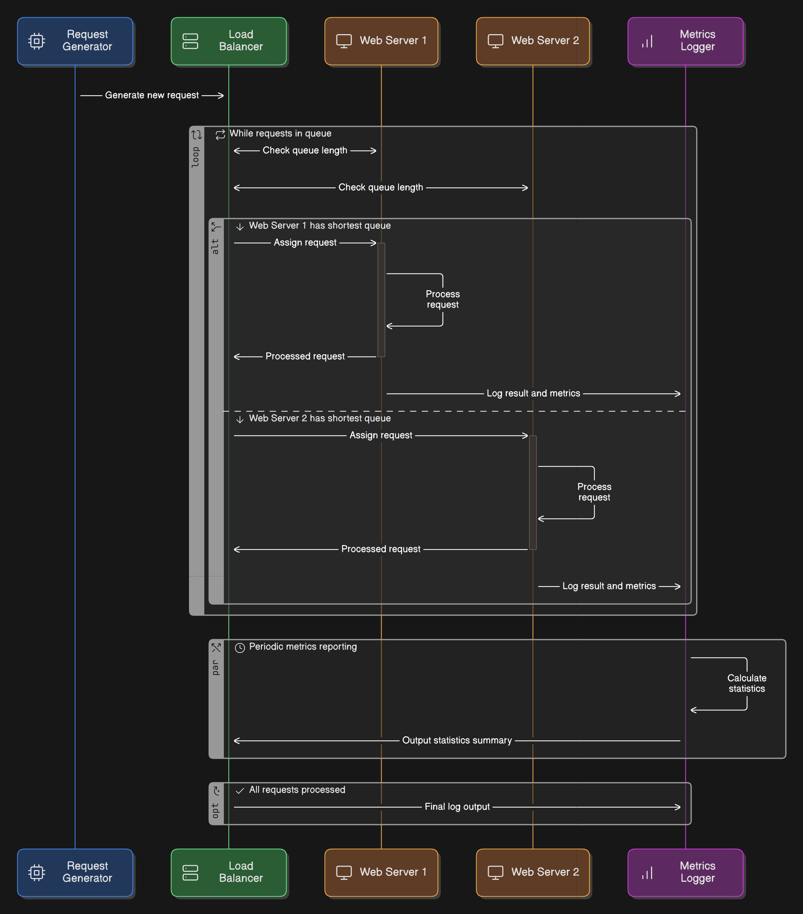

The AethelCloud load balancer high-level design is above. As a request comes into the load balancer, the balancer polls each web server to find the one with the shortest queue, and then sends the request to that server. When the server is done processing each request, it sends any statistics and logs to the Metrics Logger, then updates its queue and status for the load balancer. While the servers and load balancer are running, periodic metrics are sent from the Metrics Logger back to the load balancer for output. If the balancer detects all server queues are getting full, it will dynamically start new servers, or stop unused servers if queues are really short. After all requests are processed, a final log is created.